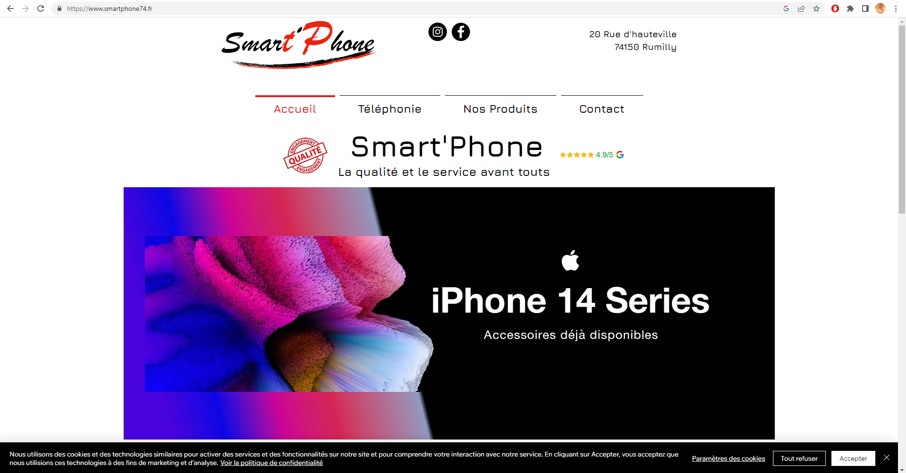

Pendant se stage de 2nd année j'ai pu faire un peu plus de chose que pendant la 1ere année comme notament une refonte de sont site web et hébérgement ;

La 1ère étape a été la reprise d'une template (un peu comme le portfolio) apres ça j'ai juste eu a suivre le cahier des charges données par le maitre de stage.
J'ai aussi eu l'occasion d'installer un serveur NAS et d'éffectué la configuration de se dernier , ainsi que de faire une nouvelle infrastruce réseau virtual pour un futur projet.